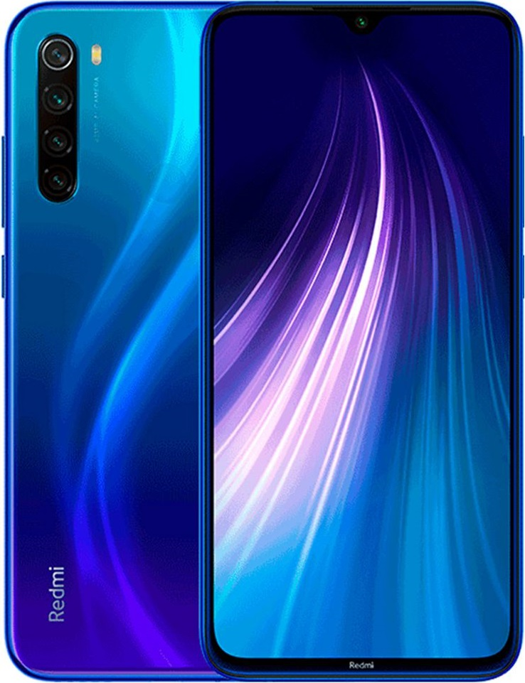

Dispositivos Electronicos
Telefonos y celulares
La tecnologia se puede decir que es mucho mejor a la anterior y ha avanzado mucho a diferencia de como era la tecnologia antigua, pero los aparatos electronicos antiguos tienen sus ventajas y desventajas al igual que los dispositivos electronicos modernos.
Las ventajas de los telefonos antiguos a comparacion del presente, es su capacidad de resistencia a los golpes y caidas. La marca de telefonos Nokia y Vergatarios se consideran uno de los telefonos mas resistentes que existe, ya que su capacidad de aguantar los golpes, caidas, y mojandolos aunque sea un poco, estos telefonos resistian mucho y seguian funcionando a la perfeccion, ya que sus pilas de bateria eran de marcas muy buenas, las desventajas es que su capacidad no era tan buena, y algunos de estos telefonos no se podia ni reproducir la musica, ni aplicaciones.
ANTES
AHORA
A comparacion de los telefonos actuales, tienen una capacidad de archivos increible, su tipo de camara, de aplicaciones y de espacio en el dispositivo, estos telefonos son unas naves que hasta puedes saber la ubicacion de otra personas con el mismo tipo de celular, las desventajas es que estos celulares actuales es que algunos celulares no pueden soportar ni un golpe minimo porque la pantalla se rompe o se daña, con un poco de agua que le entren a estos dispositivos el celular puede hasta n funcionar mas, sus pilas de bateria no son tan buenas ya que con mucho uso o no saber usarlo bien como cargarlo, apagarlo, descargando virus el telefono se puede dañar muy rapido, pero los celulares estos celulares tambien tienen ventajas, como la capacidad de archivos y de espacio, videos, musica, hasta descargando aplicaciones y juegos, camaras frontales y los modernos tienen hasta doble camara externa con una capacidad de zoom mucho mas avanzado que otros dispositivos, la capacidad de tomar fotos con efectos, editandolas, recortandolas, etc.
